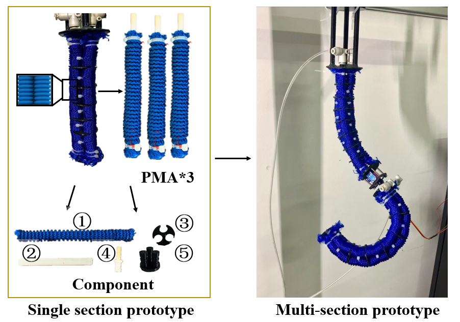
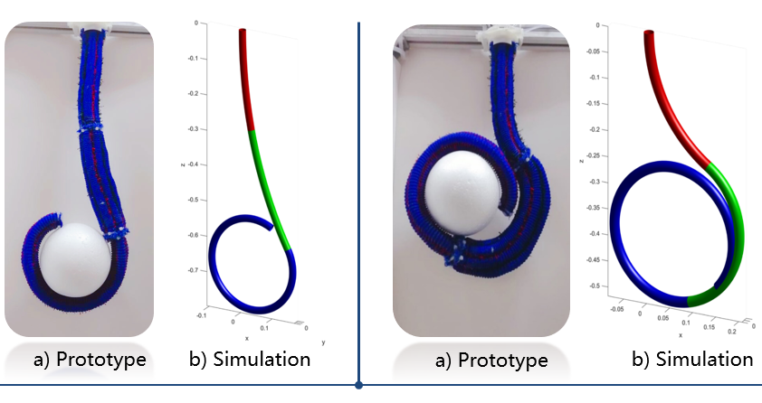

|
Shuangquan Zou (Joshua)
|
|
Ph.D candiadate,
Dept. of Control Science and Engineering，Harbin Institute of Technology,
No.92 Xidazhi Street,
Harbin City, China，
E-mail: 20b904026@stu.hit.edu.cn
Tel:(+86)18845610716
|
Biography
Shuangquan Zou received a B.S. degree from Shenyang Jianzhu University in 2018 and was recommended to Harbin Institute of Technology for a M.S. degree. Then he received his M.S. degree in 2020. He is currently a second-year Ph.D candiadate majoring in Control Science and Engineering within Harbin Institute of Technology under the supervision from Prof. Guangfu Ma. His research interests include the design and manufacture of soft manipulator, kinematic modeling, shape estimation, intelligent control algorithm and trajectory planning.
For detailed CV, please click [here]
Accomplishment
National Scholarship（bachelor, 2016)
National Scholarship（master, 2019）
China Telecom Scholarship（bachelor, 2018)
Provincial Government Scholarship（bachelor, 2015)
Mayor Scholarship（bachelor, 2017)
Presidential Scholarship*2（bachelor, 2016, 2017)
The First Prize Scholarship*8 (bachelor, master)
Outstanding Graduates Awards*2 (bachelor, master)
Research
My research focuses on the soft manipulator, mainly including:
Publications
Zou S, Lv Y*, Man Y, et al. Design and implement of shape detection for the soft manipulator[C]//2020 39th Chinese Control Conference (CCC). IEEE, 2020: 3972-3977.(EI)[pdf][DOI]
Zou S, Lv Y*, Guan Q, et al. A real-time 3D centerline estimation framework for multi-section soft manipulator based on stereo vision [J]//Control Engineering and Applied Informatics.(SCI, JCR=Q4, Accepted) [pdf]
Lv Y*, Zou S, Meng F, et al. A shape detection system and method for soft manipulator [P] CN109955234b, 2021-06-15.(China Invention Patent) [pdf][site]
Note: * indicates the corresponding author.
Under review
Zou S, Lv Y*, Qi J, et al. A deep neural network approach for accurate 3D shape estimation of soft manipulator with vision correction [J]//SENSORS AND ACTUATORS A-PHYSICAL.(SCI, JCR=Q2)
Projects
Design and manufacture of the prototype, 09.2018-2019.06 |
 |
In this work, a pressure-actuated soft manipulator for the single section is designed and fabricated. The component unit of the prototype is the pneumatic muscle actuators (PMA), made by covering the surface of the silicone rubber tube with the nylon mesh. A pneumatic connector from baseplate is directly plugged into the silicone rubber tube to control the flow of air. The annular groove on the surface of the pneumatic connector prevents it from falling off under pressure, and the outside is tightly sealed with the help of the nylon ties to further ensure air tightness. Each PMA has an individual chamber as the pressure control channel, which can extend up to 200% and withstand 0 to 3 bar pressure range. Three identical PMAs, distributed symmetrically in parallel, are circumferentially connected to actuate the prototype together. Besides, the gaps between PMAs are tightly fixed by the braided thread and nylon ties to ensure the prototype’s shape is as close as possible to the feature of constant curvature. The actuator configuration designed can bend in any direction.
Another bold attempt is to add a steering engine between the two sections of the soft manipulator. This rotatable design between sections can increase the additional degree of freedom of the prototype, and it is hoped to decouple the control of the bending direction and bending shape of the second section of the soft manipulator. This innovative design is also trying to integrate into my research.
Some skills:
|
Constant curvature 3D shape estimation based on joint information, 09.2019-06.2020 |
 |
In this work, cable encoders are selected as the sensor to measure the joint variables for the input of the kinematics model. The kinematics model for single section is proposed under the assumption of piecewise constant curvature theory, converting the length variables to the space pose. Then the single section model is extended to the multi-section model based on the novel D-H method, which obtains the posture of the whole manipulator. Finally, the reasonability of the shape detection system is verified respectively from theory and experiment, and the experiment results agree well with the simulation results in real time.
Some skills:
Keil(C)
Serial communication
MATLAB
|
Real-time 3D shape reconstruction using machine vision, Cooperate with the team of Academician Jinsong Leng
，09.2020-06.2021 |
|
In this work, cable encoders are selected as the sensor to measure the joint variables for the input of the kinematics model. The kinematics model for single section is proposed under the assumption of piecewise constant curvature theory, converting the length variables to the space pose. Then the single section model is extended to the multi-section model based on the novel D-H method, which obtains the posture of the whole manipulator. Finally, the reasonability of the shape detection system is verified respectively from theory and experiment, and the experiment results agree well with the simulation results in real time.
Some skills:
Keil(C)
Serial communication
MATLAB
|
Online Education Explainable Recommender System, NSFC, 06.2018-12.2018
Summarized over 500,000 exercises and classified their knowledge points from all subjects
Applied matrix factorization for online learning and recommendation of exercises based on interaction of users
Added latent features learned by neural networks from exercises to online matrix factorization for better performance
Activities
Teaching Assistant, Harbin Institute of Technology, 09.2018-01.2019 Teaching Assistant, Harbin Institute of Technology, 09.2021-01.2022
|